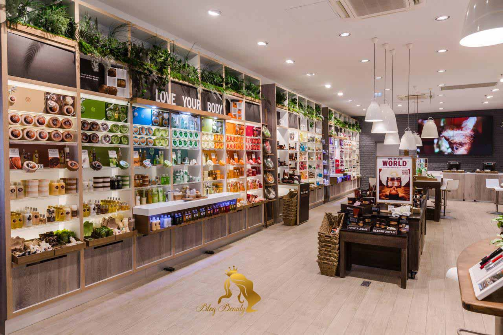
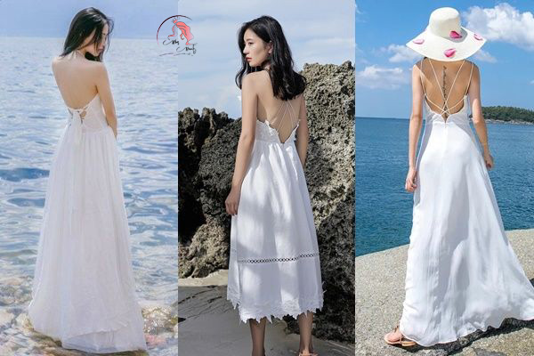
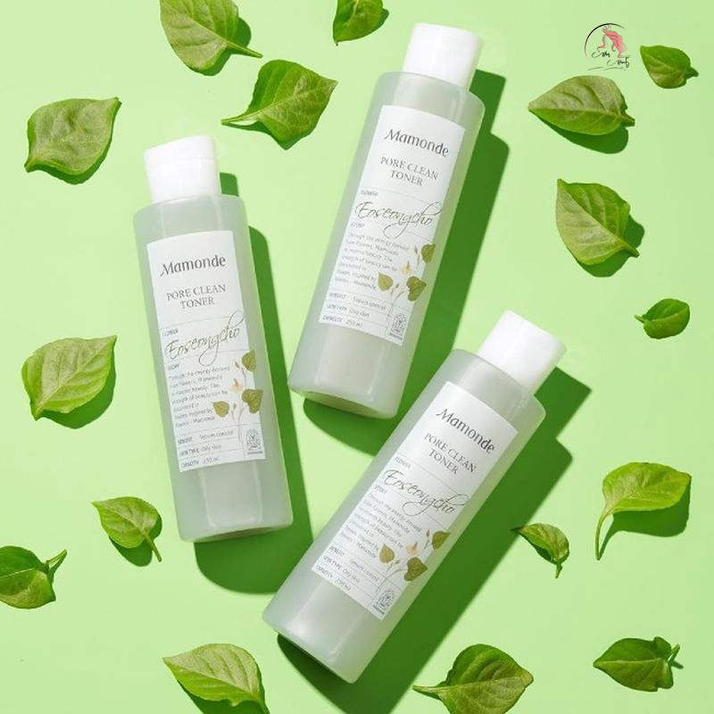
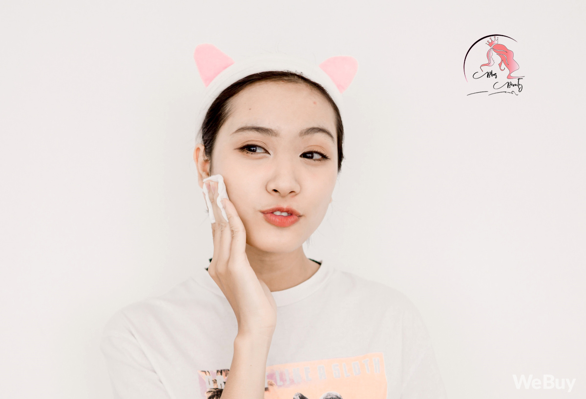

NỔI BẬT  Mỹ Phẩm The Body Shop Có Tốt Không? Review Mỹ Phẩm The Body Shop? The Body Shop là thương hiệu mỹ phẩm làm đẹp nổi tiếng được sáng lập bởi Bà Dame Anita Roddick tại Anh Quốc. Với các sản phẩm đa dạng từ chăm sóc da, chăm sóc cơ thể, chăm sóc tóc, trang điểm, nước hoa…  99 Mẫu Váy Đầm Bầu Đẹp Kiểu Dáng Mới Đa Dạng Cực Đẹp? Với cái tên hết sức đáng yêu, loại đầm bầu này vừa mang lại nét nữ tính, dịu dàng vừa giúp chị em che bụng bầu một cách khéo léo nhất. Các mẫu váy maxi có có độ rộng rất phù hợp cho bà bầu, với kiểu dáng thiết kế rộng thoải mái giúp chị em tự tin thoải mái mỗi khi dạo phố. Công Thức Làm Nước Tẩy Trang Tự Nhiên Tại Nhà Sạch Tốt Cho Da? Khi tự làm nước tẩy trang tự nhiên tại nhà các bạn bạn có thể hoàn toàn yên tâm về chất lượng; độ an toàn của sản phẩm bởi vì đã biết rõ nguồn gốc xuất xứ. Review phấn nước Clio – Top 4 phấn nước Clio tốt nhất? Thương hiệu Clio được biết đến là dòng mỹ phẩm trang điểm chuyên nghiệp hàng đầu được thành lập vào những năm 1993 của đất nước Hàn Quốc. Trong suốt 20 năm.  Top 5 Toner Mamonde mới tốt được chị em tin dùng? Khi đã nhắc đến thương hiệu Mamonde của Hàn Quốc bạn không thể bỏ qua các dòng toner siêu hấp dẫn với nhiều công dụng mà nó đã đem đến. Nhà sản xuất này còn .  [Tất tần tật] Các Loại Giấy Thấm Dầu Tốt Được Sử Dụng Nhiều Nhất? Da dầu có tuyến dầu tiết ra cực mạnh nên sẽ dễ bóng dầu nếu gặp thời tiết nắng nóng. Nếu lượng dầu dư thừa được tạo ra, các lỗ chân lông bị tắc nghẽn, gây tích tụ bụi bẩn và tạo điều kiện cho vi khuẩn hình thành..